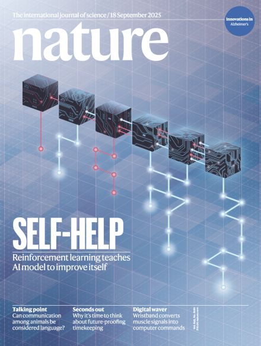
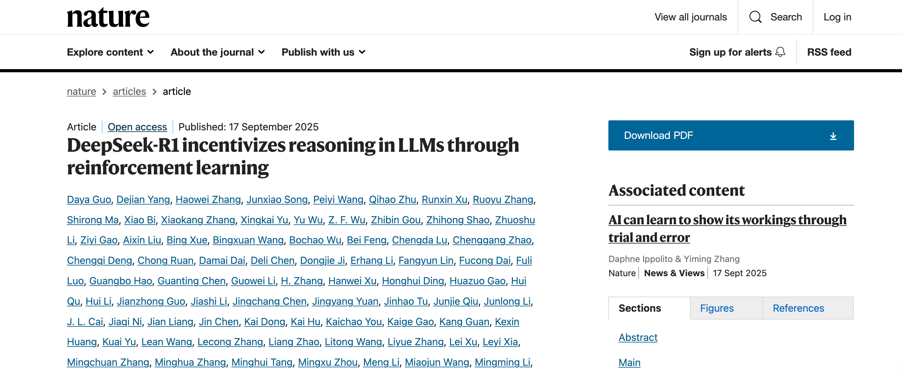
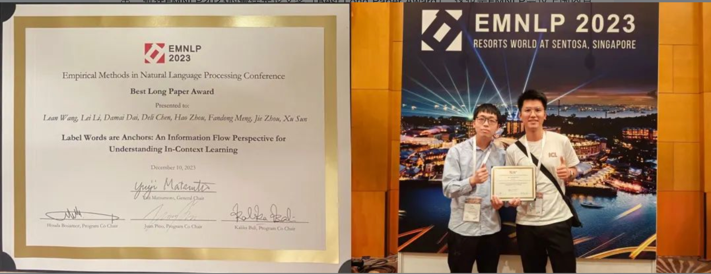

陈德里
Senior Researcher at DeepSeek AI. Building next-generation large language models.
Core contributor to DeepSeek-V1, V2, V3, V4, DeepSeek-R1 (Nature Cover), DeepSeek-Coder, DeepSeek-MoE architecture, etc.
B.S. & M.S. from Peking University · Previously Tencent WeChat AI.
All opinions are my own. | INTP-T | 人心惟危，道心惟微 ｜ #AGIforEveryone



A candid reflection on how Code Agents broke the classic INTP overthink-never-execute cycle, the new bottlenecks they reveal, and 9 survival rules for using them without losing your mind. EN/CN bilingual.
A comprehensive survey exploring how large language models are transforming the scientific research pipeline — from literature review and hypothesis generation to experiment design and paper writing. This work covers the latest advances in automated research agents and discusses the opportunities and challenges ahead.